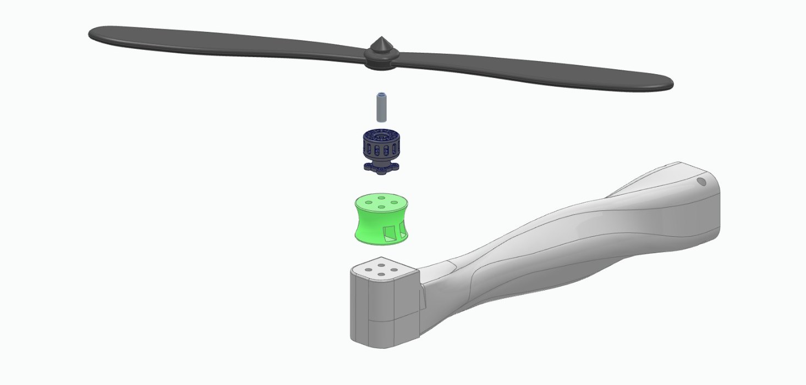
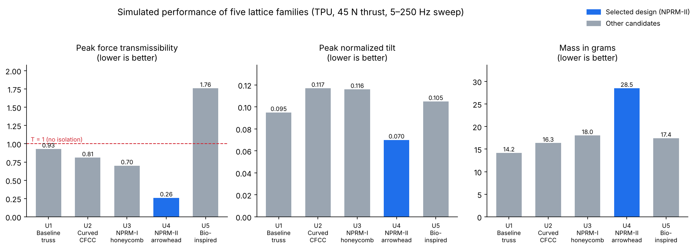
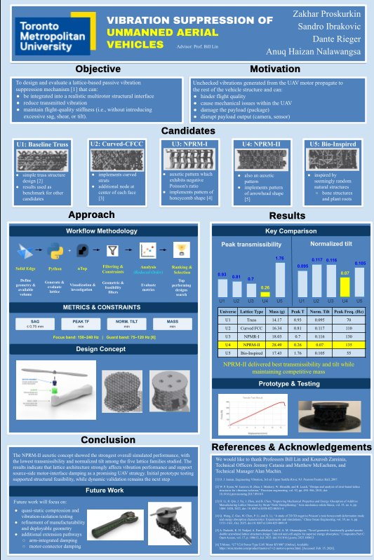

Mechanical design
A lattice damper for drone motors
Drone motors shake the whole aircraft. We designed a 3D-printed lattice that sits between the motor and the arm to stop that vibration at its source, then used simulation to pick the best of five lattice families.

The problem
Rotor imbalance, aerodynamic loads and drivetrain dynamics create broadband vibration in flight. It travels through the frame into the payload: cameras blur, sensors pick up noise, and parts wear. Most existing fixes isolate the payload or stiffen the frame, which treats the symptom. We targeted the source, the motor mount.
The design had to work across 5 to 250 Hz, carry up to 45 N of thrust, and bolt between an existing motor and arm without changing either.
Approach
There were far too many possible lattices to explore one by one in CAD and FEA, so we built a computational workflow:
- Model the geometry of five lattice families mathematically: node positions, strut shapes and repeat rules.
- Generate many configurations of each family in Python, inside the volume and bolt-hole constraints.
- Filter out designs that fail clearance, connectivity or printability checks.
- Simulate each survivor as a beam-and-joint model in TPU: static sag under 45 N, plus force transmissibility and tilt across a frequency sweep.
- Rank the candidates on transmissibility, tilt, sag and mass, and bring the best into nTop to check feasibility.
- Print a TPU prototype and test it.
| Family | Idea |
|---|---|
| U1 Baseline truss | Simple truss lattice, used as the benchmark |
| U2 Curved CFCC | Curved, hourglass-shaped struts to spread load |
| U3 NPRM-I | Auxetic honeycomb: negative Poisson’s ratio for energy absorption |
| U4 NPRM-II | Auxetic arrowhead pattern |
| U5 Bio-inspired | Randomized, root-like strut growth with weak struts pruned |
Results
The auxetic arrowhead lattice (NPRM-II) performed best overall. At its worst frequency it passed on only about a quarter of the input force, and it tilted the least. The trade-off was mass: it was the heaviest design.

| Lattice | Mass (g) | Peak transmissibility | Peak tilt | Peak at (Hz) |
|---|---|---|---|---|
| U1 Baseline truss | 14.17 | 0.93 | 0.095 | 70 |
| U2 Curved CFCC | 16.34 | 0.81 | 0.117 | 110 |
| U3 NPRM-I | 18.03 | 0.70 | 0.116 | 130 |
| U4 NPRM-II (selected) | 28.49 | 0.26 | 0.070 | 135 |
| U5 Bio-inspired | 17.43 | 1.76 | 0.105 | 55 |
- Static sag ranged from 0.17 mm (honeycomb) to 0.75 mm (baseline truss), all within the 0.75 mm limit.
- The bio-inspired lattice amplified vibration, with transmissibility above 1. Random structure didn’t help here, which was a useful result in itself.
- A 3D-printed TPU prototype of the baseline lattice held 383 N in tensile testing before deforming, a safety factor of about 8.5 over the 45 N thrust load.
What we didn’t prove yet
The vibration results are from simulation. With one semester, we ran a single physical test, a tensile test on the baseline lattice, so vibration damping hasn’t been measured on hardware. The next steps are to print the NPRM-II design, run compression and vibration-isolation tests on it, and bring its mass down.
My role
- Lattice geometric modelling and design in nTop, including the square honeycomb, simple cubic, re-entrant honeycomb and face-centred cubic damper variants
- Rendering the motor, damper and arm assembly for the poster
- Dynamic simulation support and validation strategy: comparison metrics and interpreting results
- Physical prototyping and tensile testing
- Coordinating work across the four-person team

Thanks
Prof. Bill Lin for supervising; Jeremy Catania and Matthew McEachern for help with additive manufacturing; Prof. Kourosh Zareinia for lab equipment and materials. The poster and conference paper were written by the whole team.
Full nTop, CAD and STL files are too large to post here (about 170 to 300 MB each). Email me if you’d like them, or see the write-up on GitHub.
Back to all projects